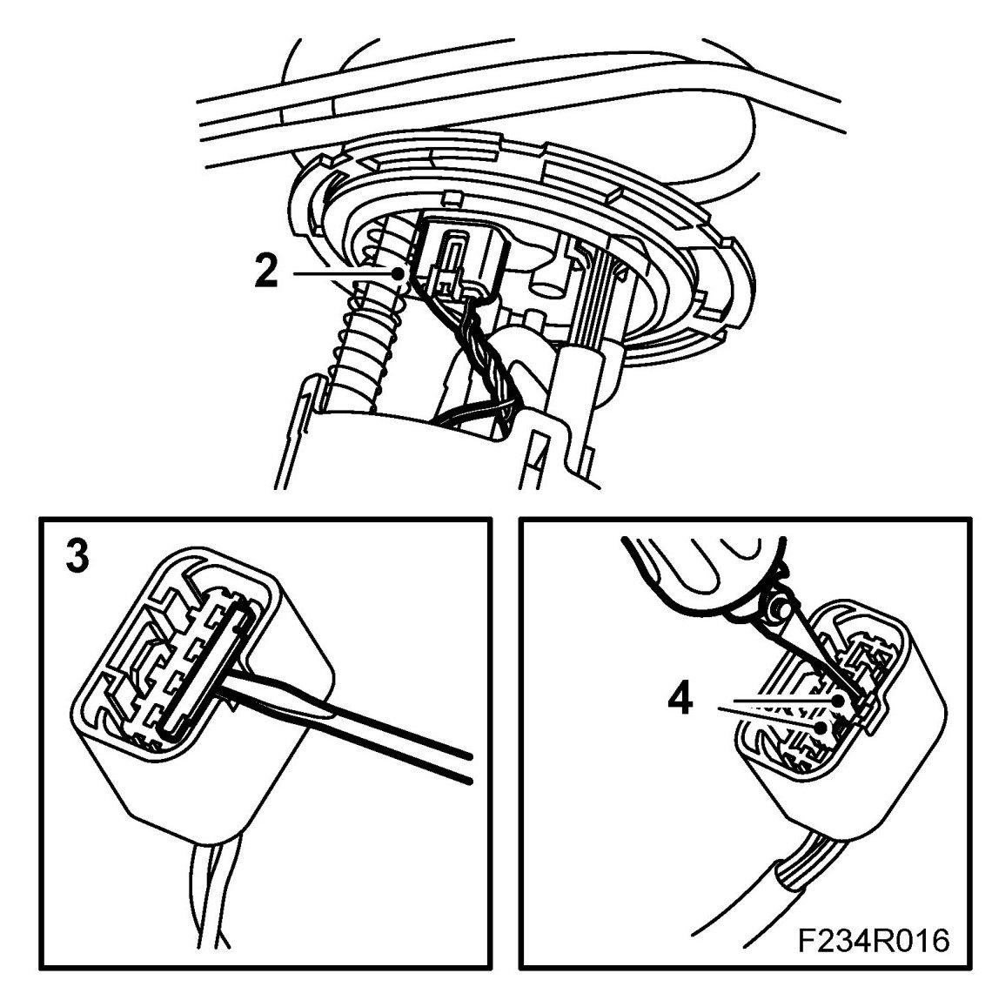
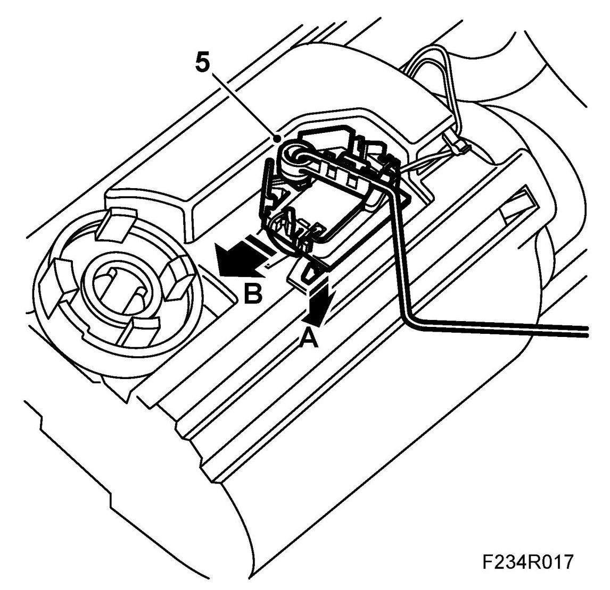
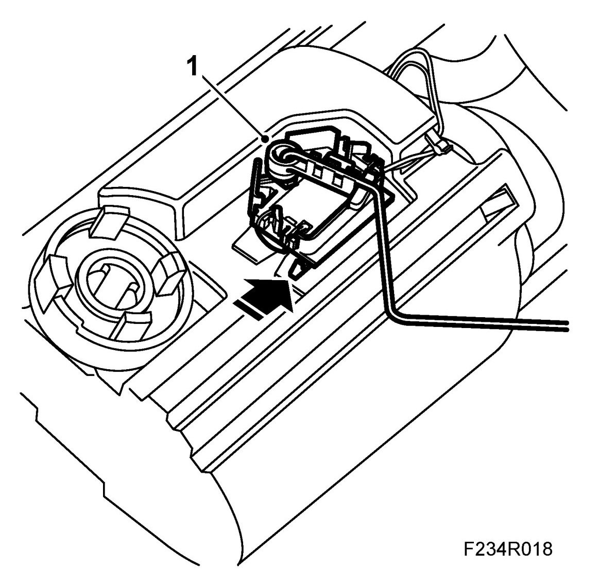
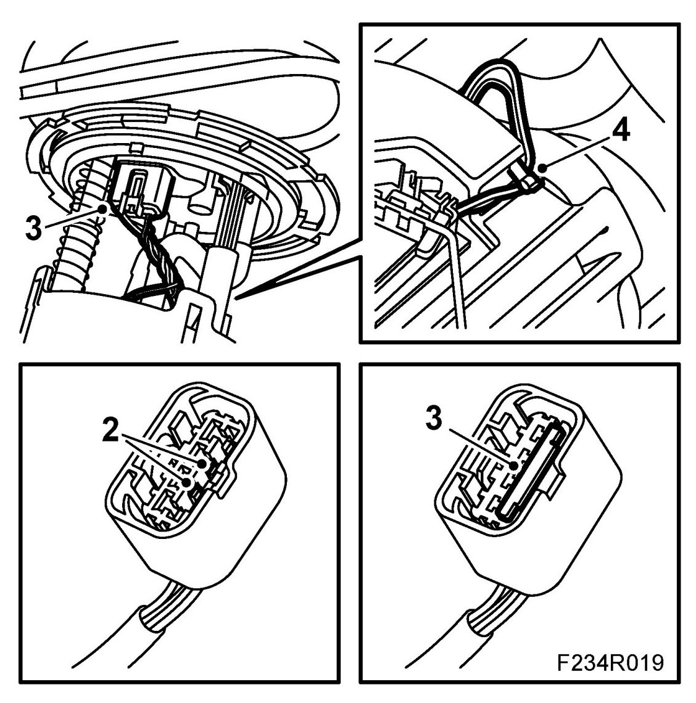

Fuel Level Sensor: Service and Repair
Fuel Level Sensor
WARNING:
Dismantling the fuel reservoir (incl. fuel level sensor) involves work on the car's fuel system. The following points must therefore be observed in conjunction with these measures:
- Ensure good ventilation. If there is approved ventilation for extraction of fuel fumes then this must be used.
- Wear protective gloves. Prolonged exposure of the hands to fuel can cause irritation of the skin.
- Have a fire extinguisher suitable for flammable liquids and electrical equipment at hand. Be aware of the risk for sparks, i.e. in connection with circuit breaking, short-circuiting, etc.
- Absolutely No Smoking.
- Wear protective glasses.
IMPORTANT: Be particularly observant regarding cleanliness when working on the fuel system. Loss of function may occur due to very small particles. Prevent dirt and grime from entering the fuel system by cleaning the connections and plugging pipes and lines during disassembly. Use 82 92 948 Plugs, A/C system assembly. Keep components free from contaminants during storage.
To remove
1. Remove the fuel pump.
2. Detach the connector from the pump cover.

3. Undo the lock on the cable terminals.
4. Prise out the fuel level sensor cable terminal, pin no. 2 (grey cable), pin no. 3 (white cable), with cables from the connector. Use 85 80 151 Kit, connector pin removal tool.
5. Remove the fuel level sensor.

IMPORTANT: Take care not to damage the fuel level sensor.
To fit
1. Fit the fuel level sensor to the fuel pump.

2. Connect the fuel level sensor cables to the connector. Pin no. 2 (grey cable) and pin no. 3 (white cable).

3. Fit the cable terminal lock and plug the connector to the pump cover.
4. Make sure the fuel level sensor cables are secure.
5. Fit the fuel pump.